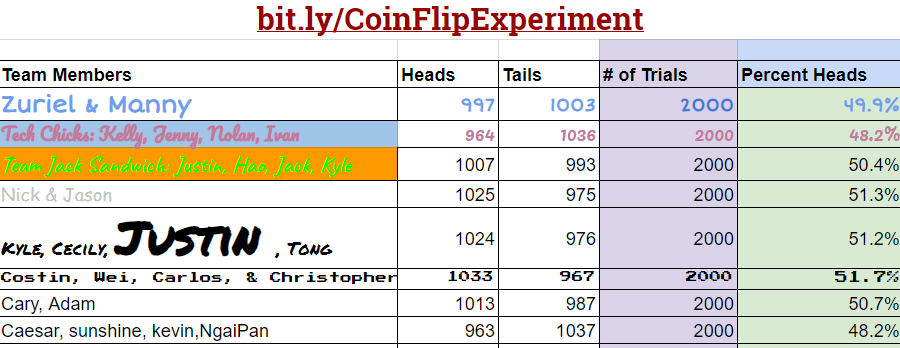

1)(POGIL) According to your results, does App Inventor's PRNG provide a good model of randomness?

According to my results, the App Inventor's PRNG provide a good model of randomness.
2)(POGIL) A friend claims that flipping a coin 100 times and finding that it comes up heads only 45% of the time shows that the coin is biased. How should you reply?
I would reply that that is randomness,it can have 100% of heads too.You can get any results that is in the range.
3)Because we are using a coin flip app, this experiment really tests only that App Inventor's random integer block generates a 1 around half the time. Is this a sufficient test for App Inventor's PRNG? What other experiments might you do to increase your confidence in App Inventor’s PRNG?
We can do this experiment 100 times with 10 coins flip each time to increase my confidence in App Inventor’s PRNG.